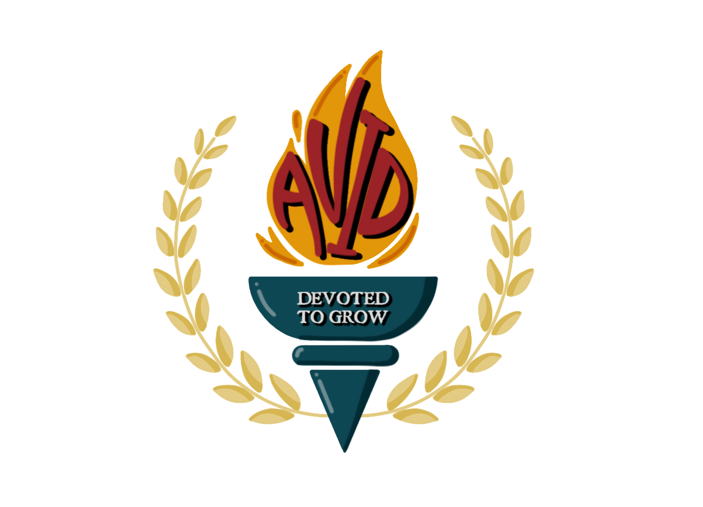
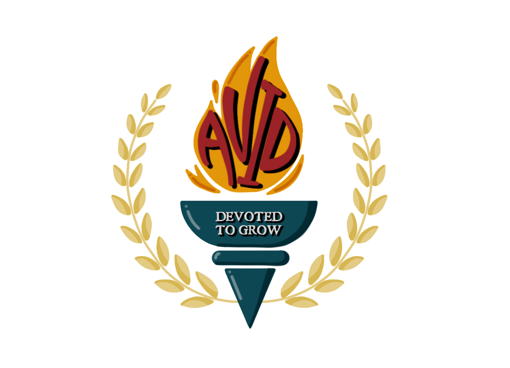

CCA Projects
Ongoing Projects: ICN Cultural Production & NTUMods
Get Together Day Website
NTU-IEM Module Projects

Sudoku

Heart Disease Prediction
Heart Disease Prediction
IE0005 - Introduction to Data Science & Artificial Intelligence


This machine learning project has been a great opportunity for me to deepen my understanding of key concepts in Exploratory Data Analysis (EDA) and machine learning models. Throughout the project, I gained valuable hands-on experience in data science. Working as a group of four, we were tasked with building machine learning models to address our problem statement. This challenge allowed us to explore models beyond what we were taught in class, expanding our knowledge and skills in the process.
With a clear problem statement, I found the project to be particularly motivating because I had a goal in mind that I wanted to achieved. As a result, our model achieved a predictor accuracy of almost 90%, which was a great result for the team.
Visit Project RepositoryWeb Design Projects
I also did some web design projects from freeCodeCamp:


 
